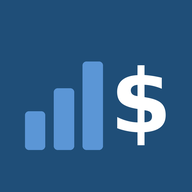

Mis Finanzas
Política de privacidad y soporte · Actualizada el 11/13/2026
Resumen: Mis Finanzas no recopila, no envía y no vende ningún dato. Todo lo que capturas se guarda solo en tu dispositivo.
Qué datos usa la app
- Las cuentas, movimientos, presupuestos, préstamos y ajustes que tú escribes. Se guardan únicamente en tu dispositivo.
- La app no tiene cuentas de usuario, no se conecta a servidores, no usa publicidad, no tiene analítica y no rastrea tu actividad.
- Nosotros no podemos ver tus datos ni recuperarlos.
Seguridad
- Si activas el bloqueo con código, tus datos se guardan cifrados (AES de 256 bits) con una llave que sale de tu código. Face ID o Touch ID los maneja tu dispositivo; la app nunca recibe tu cara ni tu huella.
- Las copias de seguridad se cifran con la contraseña que tú eliges. Sin esa contraseña no se pueden abrir.
Copias de seguridad
- Las copias solo se crean cuando tú lo pides («Guardar copia») y tú decides dónde guardarlas (por ejemplo, iCloud Drive). La app de iPhone también guarda una copia automática en la carpeta de la app dentro de Archivos, en tu propio dispositivo.
Notificaciones
- Los recordatorios de pagos son notificaciones locales que programa tu propio dispositivo. No pasan por internet.
Niños
La app no está dirigida a menores de 13 años y no recopila información de nadie.
Cambios
Si esta política cambia, se publicará aquí con la nueva fecha.
Soporte
¿Dudas o problemas? Escríbenos desde esta página.
Consejo: guarda una copia de tus datos con «Guardar copia» de vez en cuando. Si cambias de teléfono, usa «Abrir copia» en el nuevo.
Privacy Policy (English)
Mis Finanzas does not collect, transmit or sell any data. Everything you enter (accounts, transactions, budgets, loans and settings) is stored only on your device. The app has no user accounts, no servers, no ads, no analytics and no tracking. We cannot see or recover your data.
If you turn on the passcode lock, your data is encrypted on the device (AES-256). Backups are created only when you ask, are encrypted with a password you choose, and are saved wherever you decide. Payment reminders are local notifications scheduled by your own device.
The app is not directed to children under 13. Support: contact us here.